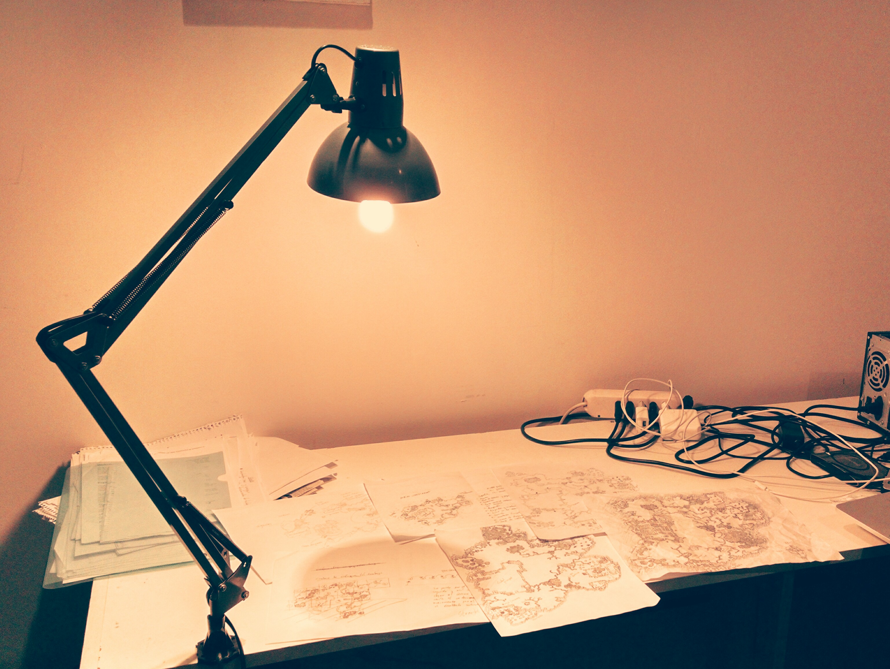
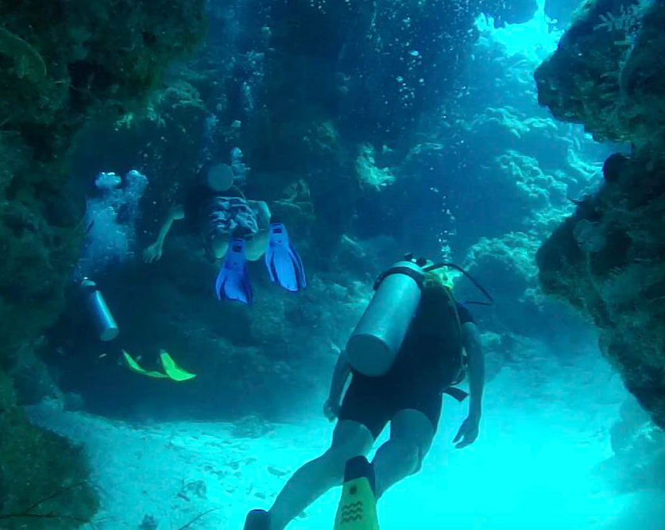

Gabriel Salinas.Codes
Developer
Coding is a catalyst for creation, to portray a complex idea into reality is fascinating to me. This feeling is something I always try to tap into when developing projects. My main pursue isn't money, I’m more interested in enjoying the process and challenges that come with it. This is where I want to be, in the world of ideas, logic and mental labyrinth.